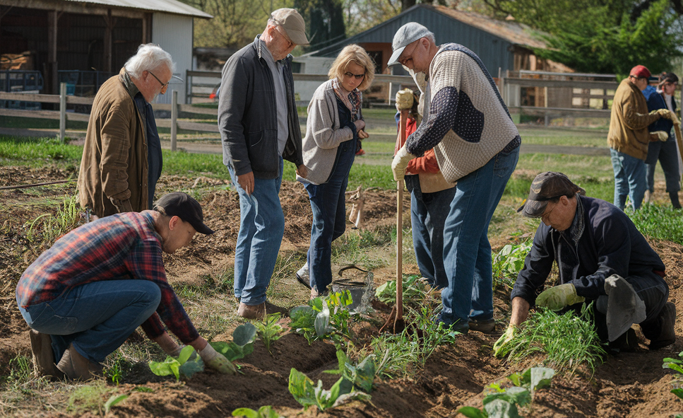

April 25, 2017
This project is based on real life data where my task was to come up a supervised predictive machine learning model.
The model was to predictive if a given farmer will request for agricultural loan or not. The problem at hand being
a categorical task, I applied various Ml models like Logistic Regression, Decision Tree, Random Forest, SVM and choose
the one with the highest accuracy score. I dumped the model to joblib model and later loaded it for prediction tasks.

This project entails data cleaning of Students Performance in their current exam and previous exam. A task was assigned to remove duplicates, format columns
and update columns, work on blank rows and all in all solve all the anomalies that would exist in the data and
would affect the later analysis process.
SQL being one of the commonly used tool used by most data analysts, I did work on a project to
explore more about the laptop sales. The initial step to check on wrangles which would exist in the data,
then started the Explarotary Data Analysis where I worked with group by functions, order by, where for filtering
CTEs in order to achieve the intended goals.
Value_Chain project is a project with aim of investigating the factors that lead most farmers to demand for agriculture loans.
Be it land size, their income, house hold size etc. My first step was to clean the data first in Excel before heading
to analysis bit. I identified my dependent and indepedent variables, performed the discriptive analysis came up with the relevant
pivot tables which led me to come up with the relevant reports. I finally arranged the reports in an attractive manner to build up
the very interactive dashboard.
After working on the school's perfomance data exploration project in SQL, the school management requested a dynamic
interactive dashboard. I had to use Power Bi to come with this dashboard. I did apply DAX to come up with some
calculated measures and columns. Like a measure of total marks and average marks by gender.